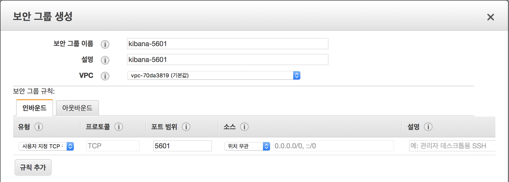

이번 포스트에서는 Kibana 설치 및 X-Pack 설치를 하고 Monitoring을 통한 클러스터 상태를 확인 해 보도록 하겠습니다. 이전 또는 이후 내용들은 아래 포스트에서 확인하세요.
1. 서버 생성 및 Elasticsearch RPM 설치
2. 메모리, 네트워크 설정 및 플러그인 설치
3. 클러스터 구성 및 마스터, 데이터 노드 설정
4. Kibana 설치 및 X-Pack Monitoring 확인
5. NFS 구성 및 elasticsearch 추가 설정
6. X-Pack Security를 이용한 SSL 및 TLS 설정
7. X-Pack License 적용 및 사용자 생성
8. Logstash 설치 및 Elasticsearch 기본 템플릿 설정
Kibana 설치
다음 링크를 참고하여 Kibana 역시 yum 을 이용한 rpm 으로 설치하겠습니다.
https://www.elastic.co/guide/en/kibana/current/rpm.html
Kibana도 elasticsearch와 마찬가지로 /etc/yum.repos.d/ 디렉토리 아래에 kibana.repo 파일을 만들고 아래와 같이 내용을 입력합니다.[kibana-6.x]
name=Kibana repository for 6.x packages
baseurl=https://artifacts.elastic.co/packages/6.x/yum
gpgcheck=1
gpgkey=https://artifacts.elastic.co/GPG-KEY-elasticsearch
enabled=1
autorefresh=1
type=rpm-md
파일을 추가하고 나서 이제 yum을 이용해서 Kibana를 설치합니다. 오류가 나지 않도록 설치 된 elasticsearch 와 동일한 버전으로 설치합니다.sudo yum install kibana -y
마찬가지로 위와 같이 하면 최신 버전이 설치되고, 특정 버전을 설치하고 싶으면 다음과 같이 뒤에 버전을 명시 해 주면 됩니다.sudo yum install kibana-6.0.0 -y
설치 문서에 나와 있는대로 ps -p 1 를 이용해서 SysV init 과 systemd 중 어떤 서비스를 사용하는지 확인합니다. 제가 만든 인스턴스는 init 을 사용하고 있습니다. 서비스에 등록하기 위해 다음 명령을 실행합니다.sudo chkconfig --add kibana
이제 Kibana도 service 명령으로 실행 또는 종료가 가능합니다.sudo -i service kibana start
sudo -i service kibana stop
Kibana 설정
Kibana RPM 버전의 기본적인 설치 경로들은 아래와 같습니다. 대부분의 설정이 1. 서버 생성 및 Elasticsearch RPM 설치 포스트에서 다루었던 Elasticsearch 설정과 유사합니다.
- 기본 프로그램 ($KIBANA_HOME) :
/usr/share/kibana- 실행 파일 :
bin/kibana - 플러그인 :
plugins
- 실행 파일 :
- 설정 :
/etc/kibana/kibana.yml - 데이터 (path.data) :
/var/lib/kibana - optimize :
/usr/share/kibana/optimize - 로그 (path.logs) :
/var/log/kibana
데이터와 로그 파일의 경로는 /etc/kibana/kibana.yml 설정 파일에서 수정이 가능합니다.
모든 경로에 접근하기 위해서는 기본적으로 root 권한을 필요로 합니다. 예를 들어 elasticsearch.yml 설정 파일을 vim 으로 편집하려고 하면 다음과 같이 실행해야 합니다.sudo vim /etc/kibana/kibana.yml
X-Pack 설치
Kibana도 Elasticsearch 와 마찬가지로 X-Pack을 설치 해야 합니다. X-Pack 설치에 대한 내용은 아래 도큐먼트를 참고해서 진행합니다.
https://www.elastic.co/guide/en/kibana/current/installing-xpack-kb.html
[ ]$ cd /usr/share/kibana |
패스워드는 Elasticsearch 에서 설정 했기 때문에 Kibana 에서는 따로 설정하지 않아도 됩니다.
kibana.yml 설정
이제 Kibana 를 실행하고 실행 로그를 살펴보면…
sudo service kibana start |
아래와 같은 오류들이 나타납니다.{"type":"log","@timestamp":"2018-01-02T07:09:36Z","tags":["warning","elasticsearch","admin"],"pid":3388,"message":"Unable to revive connection: http://localhost:9200/"}
{"type":"log","@timestamp":"2018-01-02T07:09:36Z","tags":["warning","elasticsearch","admin"],"pid":3388,"message":"No living connections"}
Elasticsearch와 정상적으로 통신을 하고, 외부에서 접근하기 위해 kibana.yml에 몇가지 설정을 추가해야 합니다.sudo vim /etc/kibana/kibana.yml
먼저 Kibana 는 기본적으로 localhost:9200 을 통해 elasticsearch에 접근하도록 되어 있습니다. 저희는 앞에서 elasticsearch의 network.host를 실제 IP 주소로 수정했기 때문에 Kibana 역시 실제 IP 주소로 elasticsearch를 찾도록 elasticsearch.url 설정을 실제 IP 주소로 설정 해 주어야 합니다.
elasticsearch.url: "http://192.168.0.10:9200" |
그리고 외부에서 접근하기 위해서는 server.host 도 실제 IP 주소로 수정해야 합니다.server.host: "192.168.0.10"
그리고 X-Pack Security를 설치했기 때문에 Elasticsearch 에 접속을 위한 kibana 계정의 아이디와 패스워드도 입력합니다.elasticsearch.username: "kibana"
elasticsearch.password: "changeme"
Kibana는 기본적으로 5601 포트를 사용합니다. (AWS의 경우) 외부에서 접근 가능하도록 보안 그룹에 5601 포트를 추가로 오픈 해 줍니다.

kibana.yml에 위 설정을을 추가하고 보안 그룹 설정을 마치면 Kibana 서비스를 재시작 합니다.[ ]$ sudo service kibana restart
kibana stopped.
kibana started
X-Pack Monitoring 확인
이제 웹브라우저를 열고 해당 http://서버주소:5601 로 접속을 하면 Kibana 로그인 화면이 나타납니다.
처음 X-Pack을 설치할 때 만들었던 아이디와 패스워드를 가지고 로그인을 합니다. 로그인 뒤에 왼쪽의 Monitoring 메뉴를 클릭 해 보면 현재 시스템 상태를 확인 해 볼 수 있습니다.
Nodes를 클릭해서 들어가 보면 ★ 표시가 된 마스터 노드, 그리고 데이터 노드들이 보이고, 마스터 노드에는 데이터가 저장되지 않은 것을 확인할 수 있습니다.
지금까지 Kibana 설치 및 X-Pack Monitoring 사용에 대해 살펴 보았습니다.
다음 포스트에서는 X-Pack Security 설정을 통해 클라이언트 및 노드들 간의 통신을 암호화 하는 방법에 대해 살펴보도록 하겠습니다.
1. 서버 생성 및 Elasticsearch RPM 설치
2. 메모리, 네트워크 설정 및 플러그인 설치
3. 클러스터 구성 및 마스터, 데이터 노드 설정
4. Kibana 설치 및 X-Pack Monitoring 확인
5. NFS 구성 및 elasticsearch 추가 설정
6. X-Pack Security를 이용한 SSL 및 TLS 설정
7. X-Pack License 적용 및 사용자 생성
8. Logstash 설치 및 Elasticsearch 기본 템플릿 설정